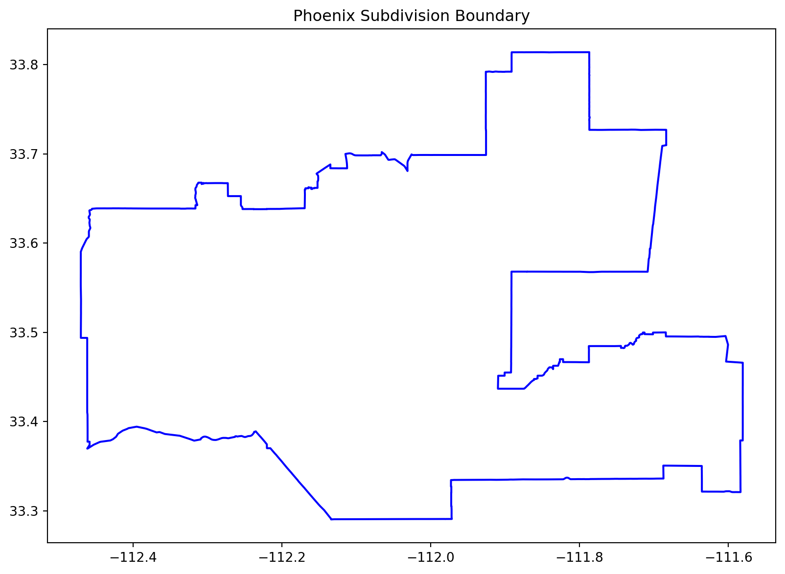
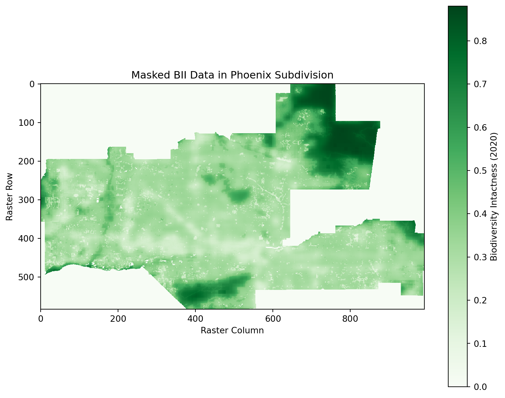
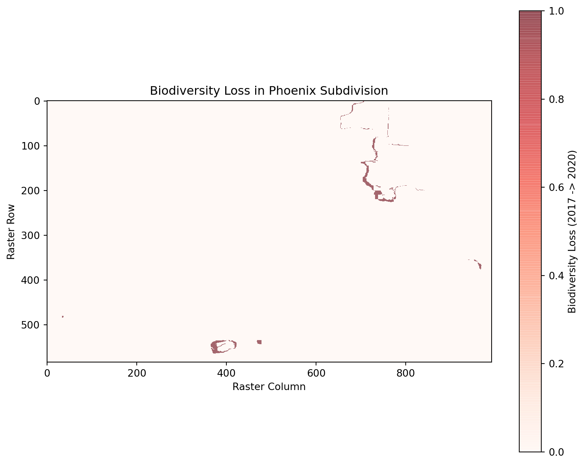
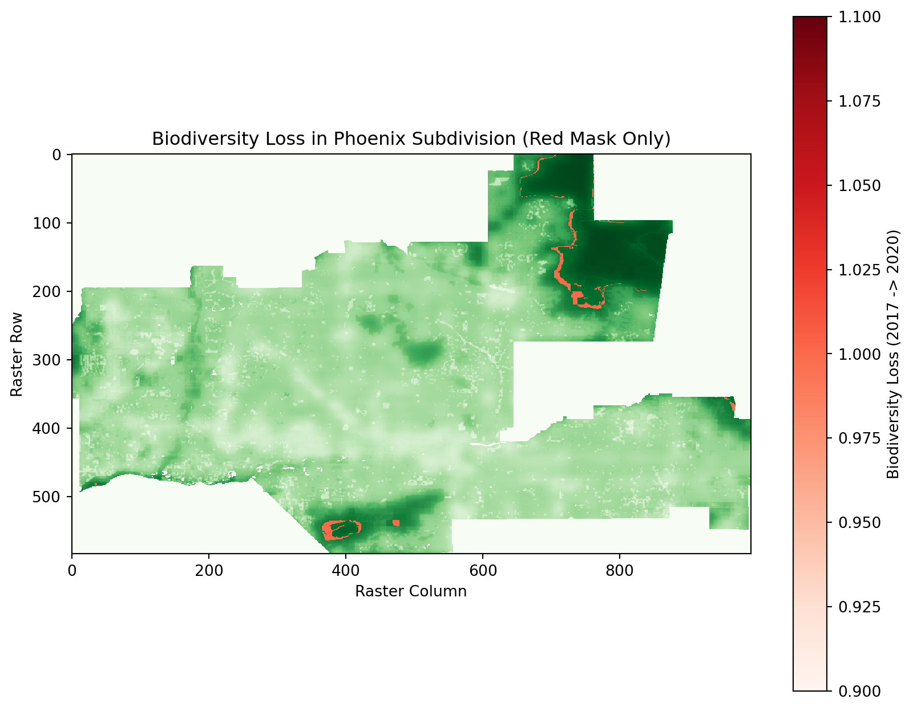

# Import required libraries
import geopandas as gpd
import matplotlib.pyplot as plt
import rasterio
from rasterio.mask import mask
import numpy as np
# For importing BII Data from Microsoft
from pystac_client import Client
import planetary_computer as pc
import requestsBiodiversity Intactness Analysis for Phoenix Subdivision
About
Purpose
This notebook analyzes the Biodiversity Intactness Index (BII) within the Phoenix subdivision for the years 2017 and 2020. It calculates biodiversity loss, visualizes the results, and identifies areas where biodiversity was maintained or declined.
Highlights
- Data exploration and masking of biodiversity data.
- Visualization of BII values for 2017 and 2020.
- Overlay of biodiversity loss with transparent backgrounds.
- Calculation of the percentage of area with biodiversity changes.
About the Data
The BII data was sourced from the Microsoft Planetary Computer and focuses on the Phoenix, AZ area. The dataset provides rasterized BII values for 2017 and 2020.
References
Microsoft Planetary Computer. (n.d.). Biodiversity intactness data. Retrieved from https://planetarycomputer.microsoft.com
GeoPandas contributors. (n.d.). GeoPandas documentation. Retrieved from https://geopandas.org
Rasterio contributors. (n.d.). Rasterio documentation. Retrieved from https://rasterio.readthedocs.io
U.S. Census Bureau. (n.d.). Census County Subdivision shapefiles for Arizona. Retrieved from https://www.census.gov/geographies/mapping-files.html
Code below is used to generate BII Data for 2017/2020
- Should only be ran if needed to generate files again.
Connect to the Planetary Computer STAC API
catalog = Client.open(“https://planetarycomputer.microsoft.com/api/stac/v1”)
Define your area of interest (Phoenix, AZ bounding box)
aoi = { “type”: “Polygon”, “coordinates”: [ [ [-112.826843, 32.974108], # Bottom-left [-111.184387, 32.974108], # Bottom-right [-111.184387, 33.863574], # Top-right [-112.826843, 33.863574], # Top-left [-112.826843, 32.974108] # Close the polygon ] ] }
Function to download raster for a specific year
def download_bii_raster(year, output_path): daterange = {“interval”: [f”{year}-01-01T00:00:00Z”, f”{year}-12-31T23:59:59Z”]}
# Search query using CQL2
search = catalog.search(filter_lang="cql2-json", filter={
"op": "and",
"args": [
{"op": "s_intersects", "args": [{"property": "geometry"}, aoi]},
{"op": "anyinteracts", "args": [{"property": "datetime"}, daterange]},
{"op": "=", "args": [{"property": "collection"}, "io-biodiversity"]}
]
})
# Retrieve the first item and sign the assets
first_item = next(search.get_items(), None)
if first_item is None:
raise ValueError(f"No data found for year {year}.")
signed_assets = pc.sign_item(first_item).assets
# Download the raster file
data_url = signed_assets["data"].href
response = requests.get(data_url)
with open(output_path, "wb") as file:
file.write(response.content)
print(f"BII raster for {year} downloaded successfully to {output_path}!")Download rasters for 2017 and 2020
download_bii_raster(2017, “bii_2017.tif”) download_bii_raster(2020, “bii_2020.tif”)
1. Data Loading and Exploration
1.1 Phoenix Subdivision Shapefilez
This section loads the Phoenix subdivision shapefile and filters it to extract the relevant geometry for analysis.
# Load Phoenix subdivision shapefile
shapefile_path = "data/tl_2020_04_cousub/tl_2020_04_cousub.shp"
county_subdivisions = gpd.read_file(shapefile_path)
# Validate shapefile
assert not county_subdivisions.empty, "Error: Shapefile is empty."
# Filter for Maricopa County and Phoenix subdivision
maricopa_subdivisions = county_subdivisions[county_subdivisions["COUNTYFP"] == "013"]
phoenix_subdivision = maricopa_subdivisions[maricopa_subdivisions["NAME"].str.contains("Phoenix")]
# Validate Phoenix subdivision
assert not phoenix_subdivision.empty, "Error: Phoenix subdivision filter returned no results."
# Plot the Phoenix subdivision for verification
fig, ax = plt.subplots(figsize=(10, 8))
phoenix_subdivision.boundary.plot(ax=ax, edgecolor="blue")
plt.title("Phoenix Subdivision Boundary")
plt.show()
1.2 Biodiversity Intactness Index (BII) Rasters
# Load and validate the BII rasters for 2017 and 2020
bii_2017 = rasterio.open("data/bii_2017.tif")
bii_2020 = rasterio.open("data/bii_2020.tif")2. Data Masking and Visualization
2.1 Masking BII Data
# Ensure CRS alignment between rasters and Phoenix subdivision
if phoenix_subdivision.crs != bii_2017.crs:
phoenix_subdivision = phoenix_subdivision.to_crs(bii_2017.crs)
print("Phoenix subdivision reprojected to match raster CRS.")
# Define a function to mask raster data
def mask_raster(raster, shapefile):
shapes = [geometry.__geo_interface__ for geometry in shapefile.geometry]
masked, transform = mask(raster, shapes, crop=True)
assert masked.size > 0, "Error: Masked raster is empty."
return masked[0], transform
# Mask the 2017 and 2020 rasters
masked_bii_2017, transform_bii_2017 = mask_raster(bii_2017, phoenix_subdivision)
masked_bii_2020, transform_bii_2020 = mask_raster(bii_2020, phoenix_subdivision)Phoenix subdivision reprojected to match raster CRS.2.2 Visualizing Biodiversity Loss
# Plot the masked 2020 raster
plt.figure(figsize = (10, 8))
plt.imshow(masked_bii_2020, cmap = "Greens", interpolation = "none")
plt.colorbar(label = "Biodiversity Intactness (2020)")
plt.title("Masked BII Data in Phoenix Subdivision")
plt.xlabel("Raster Column")
plt.ylabel("Raster Row")
plt.show()
3. Biodiversity Loss Analysis
3.1 Calculating Biodiversity Loss
# Identify areas with biodiversity loss (BII >= 0.75 in 2017 but < 0.75 in 2020)
loss_mask = (masked_bii_2017 >= 0.75) & (masked_bii_2020 < 0.75)
# Calculate loss percentage
total_pixels = masked_bii_2017.size
loss_pixels = np.sum(loss_mask)
loss_percentage = (loss_pixels / total_pixels) * 100
print(f"Percentage of area with biodiversity loss: {loss_percentage:.2f}%")Percentage of area with biodiversity loss: 0.38%3.2 Visualizing Biodiversity Loss
# Plot biodiversity loss
plt.figure(figsize=(10, 8))
plt.imshow(loss_mask, cmap="Reds", interpolation="none", alpha=0.6)
plt.colorbar(label="Biodiversity Loss (2017 -> 2020)")
plt.title("Biodiversity Loss in Phoenix Subdivision")
plt.xlabel("Raster Column")
plt.ylabel("Raster Row")
plt.show()
3.3 Overlaying Biodiversity Loss
# Prepare the loss mask for visualization with transparency
loss_mask_with_nan = np.where(loss_mask, 1, np.nan) # Set True values to 1, others to NaN
# Plot the masked BII data as the base layer
plt.figure(figsize=(10, 8))
plt.imshow(masked_bii_2020, cmap="Greens", interpolation="none", label="Biodiversity Intactness (2020)")
# Plot only the red loss mask with a transparent background
plt.imshow(loss_mask_with_nan, cmap="Reds", interpolation="none")
plt.colorbar(label="Biodiversity Loss (2017 -> 2020)")
plt.title("Biodiversity Loss in Phoenix Subdivision (Red Mask Only)")
plt.xlabel("Raster Column")
plt.ylabel("Raster Row")
plt.show()
4.1 Percentage of Area with BII ≥ 0.75 in 2017
# Calculate percentage of area with BII >= 0.75 in 2017
total_pixels_2017 = masked_bii_2017.size
pixels_bii_2017_high = np.sum(masked_bii_2017 >= 0.75)
percentage_bii_2017_high = (pixels_bii_2017_high / total_pixels_2017) * 100
print(f"Percentage of area with BII >= 0.75 in 2017: {percentage_bii_2017_high:.2f}%")Percentage of area with BII >= 0.75 in 2017: 4.17%4.2 Percentage of Area with BII ≥ 0.75 in 2020
# Calculate percentage of area with BII >= 0.75 in 2020
total_pixels_2020 = masked_bii_2020.size
pixels_bii_2020_high = np.sum(masked_bii_2020 >= 0.75)
percentage_bii_2020_high = (pixels_bii_2020_high / total_pixels_2020) * 100
print(f"Percentage of area with BII >= 0.75 in 2020: {percentage_bii_2020_high:.2f}%")Percentage of area with BII >= 0.75 in 2020: 3.80%